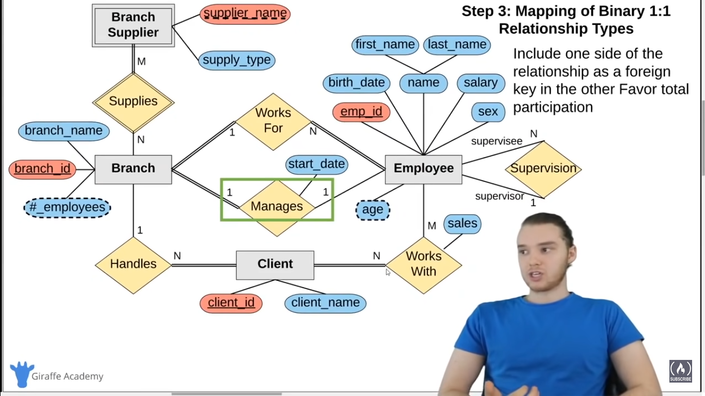
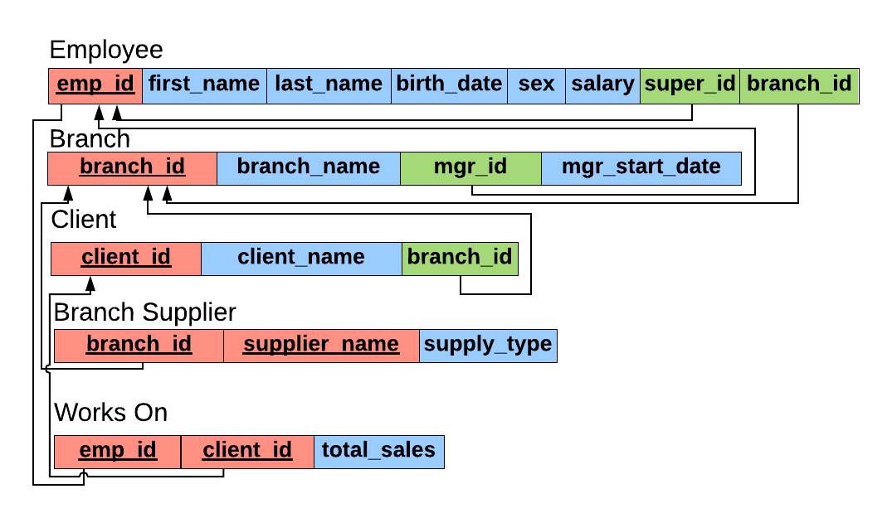

mysql
Table of Contents
- Introduction (0:00)
- What is a Database? (2:36)
- What is Database (DB) ?
- Datebases can be stored in different ways
- Advantage of Database
- Database Management System
- CRUD : Create Read Update Delete
- Type of Databases
- Relational Databases Management System (RDMS)
- Non- Relational Databases (no-SQL/not just SQL )
- Non-Relation Database Management System (NRDBMS)
- Database Queries
- Wrap Up
- Tables & Keys (23:10)
- SQL Basics (43:31)
- Installation
- Creating Tables (1:15:49)
- Inserting Data (1:31:05)
- Constraints (1:38:17)
- Update & Delete (1:48:11)
- Basic Queries (1:56:11)
- Company Database Intro (2:08:37)
- Creating Company Database (2:14:05)
- More Basic Queries (2:30:27 )
- Functions (2:26:24)
- Wildcards (2:45:13)
- Union (2:53:53)
- Joins (3:01:36)
- Nested Querie (3:11:49)
- On Delete entry when they have foreign in them (3:21:52)
- Triggers (3:30:05)
- ER Diagrams Intro (3:42:12)
- Designing an ER Diagram (3:55:53)
- Converting ER Diagrams to Schemas and ER Diagram Mapping (4:08:34)
- TO DO EER Diagram
- ToDo Link database with class in python
- Same SQL Note on sqllite, postgresql, sqlalchemy
Mysql : https://www.youtube.com/watch?v=HXV3zeQKqGY
- freeCodeCamp.org
- Mike Dane
Introduction (0:00)
What is a Database? (2:36)
What is Database (DB) ?
Orgainsed way of storing the data
- Any collection of related information
- Phone Book
- Shopping List
- Todo List
- Your 5 best friends
- Facebook User Base
Datebases can be stored in different ways
- On paper
- In your mind
- On a computer
- powerpoint
- Comments Section
Advantage of Database
- Keeps track of Products, Reviews, Purchase Order, CreditCards, User, Media, etc
- Trillions of pieces of information need to be stored and readily avaiable
- Information is extremely valuable and critical to functioning
- Security is essential, stores peoples personal information
- Credit card, , Address, phone
- Information is stored on a computer
Database Management System
- A special software program that help users create and maintain a database
- Makes it easy to manage large amount of information
- Handles Security
- Backups
- Importing/exporting data
- Concurrency
- Interacts with sofware application
- Programming Language
CRUD : Create Read Update Delete
Type of Databases
- Relational Databases (SQL)
- Organize data into one or more tables
- Each table has columns and rows
- A unique key identifiers each row
- Organize data into one or more tables
- Non- Relation (noSQL/not just SQL)
- Key-value stores
- Documents (JSON, XML,etc)
- Graphs,
- Flexible Tables
Relational Databases Management System (RDMS)
- Help users create and maintain a relation database
- mySQL, Oracle, postgreSQL, mariaDB, etc.
- Structured Query Language (SQL)
- Standardized language for interacting with RDMS
- Used to perform
CRUDoperatoins, as well other administrative task (user management, security , backup, etc) - SQL code used on one RDMS is not always portable to another without modification.
Non- Relational Databases (no-SQL/not just SQL )
Non-Relation Database Management System (NRDBMS)
- Help users create and maintain a relation database
- mongoDB, dynamoDB, apache cassandra, firebase, etc.
- Implementation Specific
- Any non-relational database falls under this category, so there's no set language standard.
- Monst NRDBMS will implement their own language for performing
CRUDand administrative operations on the database.
Database Queries
- Database Queries are requests made to the database management system for specific information
- As the database's structe become more and more complex, it becomes more difficult to get the specific pieces of information we want.
- A google seach is a query
Wrap Up
- Database is any collection of related information
- Computer are great for storing database
- Database Management System (DBMS) make it easy to create, maintain and secure a database.
- DBMS allow you to perform the CRUD operation and other administrative tasks
- Two types of Databases, Relational & Non-Relational
- Relational dataases use SQL and store data in tables with rows and columns
- Non- Relational data stor data using other data structure
Tables & Keys (23:10)
- Relational db OR Table consist of row and columns with header
- has atleast one unique key
table are linke by a
foregin keyin main table
Composit key or composit key- eg: Branch Supplier : the primary key is combination of both
branch_idandsupplier_name
- eg: Branch Supplier : the primary key is combination of both
SQL Basics (43:31)
Structured Qured Language (SQL)
- SQL is a language used for interacting with Relational Database Management Systems (RDMS)
- You can use SQL to get the RDBMS to do things for you
- Create, retrive, update & delete data
- Create & Manage databases
- Design & create databases tables
- Perform administration tasks (security, user management, import/export, etc)
- You can use SQL to get the RDBMS to do things for you
- SQL implementations vary between systems
- Not all RDMS follow the SQL strandard to a 'T'
- The concpets are the same but the implementatin may vary
- SQL is actually a hybrid language, it's basically 4 types of languages in one
- Data Query Language (DQL)
- Used to query the database for information.
- Get information that is already stored there
- Data Definition Language(DDL)
- Used for defining database schemas.
- Data Control Language (DCL)
- Used for contorlling access to the data in database.
- Used & permission magnement
- Data Manipualtion Lanaguage (DML)
- Used for inserting, updating and deleting data from the database
- Data Query Language (DQL)
Queries
- A quer is a set of instructions given to the RDBMS (written is SQL ) that tell the RDMS what information you want in to retrive for you
- TONS of data in a DB
- Often hidden in a complex schemas
Goal is to only get teh data
SELECT employee.name , employee.age FROM employee WHERE employee.salary > 3000 ;
Installation
MySQL Windows Installation (52:26)
mysql and pop-sql to visuallize the install mysql community edition
- Download mySQL Community Server - https://dev.mysql.com/downloads/mysql/
- Be sure to go to the windows installer page
- Run installer
- Choose ‘Custom Installation’ and install the server and the shell
- Create a root password
- Go into start menu, open MySQL Shell and login
Create a database
CREATE DATABASE giraffe_db;
MySQL Mac Installation (1:01:59)
- Download mySQL Community Server - https://dev.mysql.com/downloads/mysql/
- Run installer
- Write down temporary password
- Open ‘MySQL’ in System Preferences and start the server
Configure Termianl command line to recognize ‘mysql’ command
echo ‘export PATH=/usr/local/mysql/bin:$PATH’ >> ~/.bash_profile . ~/.bash_profile
- Login with root user
mysql -u root -p- Enter temporary password from step 3 when prompted Change temporary password
ALTER USER 'root'@'localhost' IDENTIFIED BY 'new_password';
Test to make sure new password worked
exit mysql -u root -p # - Enter new password when prompted
Create a database
CREATE DATABASE giraffe_db;
Done!
TODO Linux Installation
Creating Tables (1:15:49)
DataType in sql
INT -- Whole Numbers DECIMAL(M,N) -- Decimal Numbers - Exact Value -- M : total no of digits in Number -- N : total no of decimal places in Number VARCHAR(l) -- String of text of length l BLOB -- Binary Large Object, Stores large data -- images, files DATE -- 'YYYY-MM-DD' TIMESTAMP -- 'YYYY-MM-DD HH:MM:SS' - used for recording events
Create a table
-- Creating tables CREATE TABLE student ( student_id INT PRIMARY KEY, name VARCHAR(40), major VARCHAR(40) -- PRIMARY KEY(student_id) ); DESCRIBE student; -- show table DROP TABLE student; -- delete table student ALTER TABLE student ADD gpa DECIMAL; ALTER TABLE student DROP COLUMN gpa;
Show table
source : https://database.guide/4-ways-to-list-all-tables-in-a-mysql-database/
SHOW TABLES;
| Tablesinmusic |
-----------------
| Albums |
| Artists |
| Genres |
| valbumsartists |
| valbumsgenres |
| vallalbums |
| vallartists |
| vallgenres |
SHOW FULL TABLES;
| Tablesinmusic | Tabletype |
------------------------–—+
| Albums | BASE TABLE |
| Artists | BASE TABLE |
| Genres | BASE TABLE |
| valbumsartists | VIEW |
| valbumsgenres | VIEW |
| vallalbums | VIEW |
| vallartists | VIEW |
| vallgenres | VIEW |
SHOW FULL TABLES WHERE Table_type = 'BASE TABLE';
| Tablesinmusic | Tabletype |
------------------------–—+
| Albums | BASE TABLE |
| Artists | BASE TABLE |
| Genres | BASE TABLE |
SHOW TABLES LIKE 'a%';
| Tablesinmusic (a%) |
----------------------
| Albums |
| Artists |
Inserting Data (1:31:05)
INSERT INTO student VALUES(1, 'Jack', 'Biology'); INSERT INTO student VALUES(2, 'Kate', 'Sociology'); INSERT INTO student(student_id, name) VALUES(3, 'Claire'); INSERT INTO student VALUES(4, 'Jack', 'Biology'); INSERT INTO student VALUES(5, 'Mike', 'Computer Science');
Constraints (1:38:17)
CREATE TABLE student ( student_id INT PRIMARY KEY AUTO_INCREMENT, name VARCHAR(40) NOT NULL, -- name VARCHAR(40) UNIQUE, major VARCHAR(40) DEFAULT 'undecided', );
Update & Delete (1:48:11)
Update
UPDATE student SET major = 'Undecided'; UPDATE student SET name = 'Johnny' WHERE student_id = 4; UPDATE student SET major = 'Biological Sciences' WHERE major = 'Biology'; UPDATE student SET major = 'Biosociology' WHERE major = 'Biology' OR major = 'sociology' UPDATE student SET major = 'Undecided', name = 'Tom' WHERE student_id = 4;
Delete
DELETE FROM student; DELETE FROM student WHERE student_id = 4; DELETE FROM student WHERE major = 'Sociology' AND name = 'Kate';
Basic Queries (1:56:11)
SELECT *
FROM student;
SELECT student.name, student.major
FROM student;
SELECT student.name, student.major
FROM student
ORDER BY name;
SELECT student.name, student.major
FROM student
ORDER BY name DESC;
SELECT student.name, student.major
FROM student
ORDER BY major name ASC;
-- Limit n : show only the top n result
SELECT student.name, student.major
FROM student
ORDER BY major name ASC;
LIMIT 2;
-- WHERE
-- Condtions in where are
-- [ <, >, <=, >=, =,<>(NOT Equal), AND, OR]
SELECT *
FROM student
WHERE name = 'Jack';
SELECT *
FROM student
WHERE student_id > 2;
SELECT *
FROM student
-- show all student whoes id is < 2 and don't include Jack
WHERE student_id <= 2 AND name <> 'Jack';
SELECT *
FROM student
WHERE major = 'Biology' AND student_id > 1;
-- IN
SELECT *
FROM student
WHERE major IN ('Biology', 'Chemistry') AND student_id >2;
Company Database Intro (2:08:37)
Creating Company Database (2:14:05)
Create Tables
CREATE TABLE employee ( emp_id INT PRIMARY KEY, first_name VARCHAR(40), last_name VARCHAR(40), birth_day DATE, sex VARCHAR(1), salary INT, super_id INT, -- super_id is foreign key but superviser table is not created at so branch_id INT -- branch_id is foregin key but branch table is not created at ); CREATE TABLE branch ( branch_id INT PRIMARY KEY, branch_name VARCHAR(40), mgr_id INT, mgr_start_date DATE, FOREIGN KEY(mgr_id) REFERENCES employee(emp_id) ON DELETE SET NULL ); -- set branch_id as foreign key in main table employee ALTER TABLE employee ADD FOREIGN KEY(branch_id) REFERENCES branch(branch_id) ON DELETE SET NULL; -- set super_id as foreign key in main table employee ALTER TABLE employee ADD FOREIGN KEY(super_id) REFERENCES employee(emp_id) ON DELETE SET NULL; CREATE TABLE client ( client_id INT PRIMARY KEY, client_name VARCHAR(40), branch_id INT, FOREIGN KEY(branch_id) REFERENCES branch(branch_id) ON DELETE SET NULL ); CREATE TABLE works_with ( emp_id INT, client_id INT, total_sales INT, PRIMARY KEY(emp_id, client_id), FOREIGN KEY(emp_id) REFERENCES employee(emp_id) ON DELETE CASCADE, FOREIGN KEY(client_id) REFERENCES client(client_id) ON DELETE CASCADE ); -- This table has composit key require more than 1 field as primary CREATE TABLE branch_supplier ( branch_id INT, supplier_name VARCHAR(40), supply_type VARCHAR(40), PRIMARY KEY(branch_id, supplier_name), FOREIGN KEY(branch_id) REFERENCES branch(branch_id) ON DELETE CASCADE );
Insert
---------------------------------------------------------- -- Corporate INSERT INTO employee VALUES(100, 'David', 'Wallace', '1967-11-17', 'M', 250000, NULL, NULL); -- here branch_id, super_id is not created at INSERT INTO branch VALUES(1, 'Corporate', 100, '2006-02-09'); UPDATE employee SET branch_id = 1 WHERE emp_id = 100; INSERT INTO employee VALUES(101, 'Jan', 'Levinson', '1961-05-11', 'F', 110000, 100, 1); -- Scranton INSERT INTO employee VALUES(102, 'Michael', 'Scott', '1964-03-15', 'M', 75000, 100, NULL); INSERT INTO branch VALUES(2, 'Scranton', 102, '1992-04-06'); UPDATE employee SET branch_id = 2 WHERE emp_id = 102; INSERT INTO employee VALUES(103, 'Angela', 'Martin', '1971-06-25', 'F', 63000, 102, 2); INSERT INTO employee VALUES(104, 'Kelly', 'Kapoor', '1980-02-05', 'F', 55000, 102, 2); INSERT INTO employee VALUES(105, 'Stanley', 'Hudson', '1958-02-19', 'M', 69000, 102, 2); -- Stamford INSERT INTO employee VALUES(106, 'Josh', 'Porter', '1969-09-05', 'M', 78000, 100, NULL); INSERT INTO branch VALUES(3, 'Stamford', 106, '1998-02-13'); UPDATE employee SET branch_id = 3 WHERE emp_id = 106; INSERT INTO employee VALUES(107, 'Andy', 'Bernard', '1973-07-22', 'M', 65000, 106, 3); INSERT INTO employee VALUES(108, 'Jim', 'Halpert', '1978-10-01', 'M', 71000, 106, 3); -- BRANCH SUPPLIER INSERT INTO branch_supplier VALUES(2, 'Hammer Mill', 'Paper'); INSERT INTO branch_supplier VALUES(2, 'Uni-ball', 'Writing Utensils'); INSERT INTO branch_supplier VALUES(3, 'Patriot Paper', 'Paper'); INSERT INTO branch_supplier VALUES(2, 'J.T. Forms & Labels', 'Custom Forms'); INSERT INTO branch_supplier VALUES(3, 'Uni-ball', 'Writing Utensils'); INSERT INTO branch_supplier VALUES(3, 'Hammer Mill', 'Paper'); INSERT INTO branch_supplier VALUES(3, 'Stamford Lables', 'Custom Forms'); -- CLIENT INSERT INTO client VALUES(400, 'Dunmore Highschool', 2); INSERT INTO client VALUES(401, 'Lackawana Country', 2); INSERT INTO client VALUES(402, 'FedEx', 3); INSERT INTO client VALUES(403, 'John Daly Law, LLC', 3); INSERT INTO client VALUES(404, 'Scranton Whitepages', 2); INSERT INTO client VALUES(405, 'Times Newspaper', 3); INSERT INTO client VALUES(406, 'FedEx', 2); -- WORKS_WITH INSERT INTO works_with VALUES(105, 400, 55000); INSERT INTO works_with VALUES(102, 401, 267000); INSERT INTO works_with VALUES(108, 402, 22500); INSERT INTO works_with VALUES(107, 403, 5000); INSERT INTO works_with VALUES(108, 403, 12000); INSERT INTO works_with VALUES(105, 404, 33000); INSERT INTO works_with VALUES(107, 405, 26000); INSERT INTO works_with VALUES(102, 406, 15000); INSERT INTO works_with VALUES(105, 406, 130000);
More Basic Queries (2:30:27 )
-- Find all employees
SELECT *
FROM employee;
-- Find all clients
SELECT *
FROM clients;
-- Find all employees ordered by salary
SELECT *
from employee
ORDER BY salary ASC/DESC;
-- Find all employees ordered by sex then name
SELECT *
from employee
ORDER BY sex, name;
-- Find the first 5 employees in the table
SELECT *
from employee
LIMIT 5;
-- Find the first and last names of all employees
SELECT first_name, employee.last_name
FROM employee;
-- Find the forename and surnames names of all employees
SELECT first_name AS forename, employee.last_name AS surname
FROM employee;
-- Find out all the different genders
SELECT DISCINCT sex
FROM employee;
-- Find out all the different branch in company
SELECT DISCINCT branch_id
FROM employee;
-- Find all male employees
SELECT *
FROM employee
WHERE sex = 'M';
-- Find all employees at branch 2
SELECT *
FROM employee
WHERE branch_id = 2;
-- Find all employee's id's and names who were born after 1969
SELECT emp_id, first_name, last_name
FROM employee
WHERE birth_day >= 1970-01-01;
-- Find all female employees at branch 2
SELECT *
FROM employee
WHERE branch_id = 2 AND sex = 'F';
-- Find all employees who are female & born after 1969 or who make over 80000
SELECT *
FROM employee
WHERE (birth_day >= '1970-01-01' AND sex = 'F') OR salary > 80000;
-- Find all employees born between 1970 and 1975
SELECT *
FROM employee
WHERE birth_day BETWEEN '1970-01-01' AND '1975-01-01';
-- Find all employees named Jim, Michael, Johnny or David
SELECT *
FROM employee
WHERE first_name IN ('Jim', 'Michael', 'Johnny', 'David');
Functions (2:26:24)
-- Find the number of employees SELECT COUNT(emp_id) FROM employee; -- How many employees has super visor SELECT COUNT(super_id) FROM employee; -- Find the average of all employee's salaries SELECT AVG(salary) FROM employee; -- Find the sum of all employee's salaries SELECT SUM(salary) FROM employee; -- Find out how many males and females there are SELECT COUNT(sex), sex FROM employee GROUP BY sex -- Find the total sales of each salesman SELECT SUM(total_sales), emp_id FROM works_with GROUP BY client_id; -- Find the total amount of money spent by each client SELECT SUM(total_sales), client_id FROM works_with GROUP BY client_id;
Wildcards (2:45:13)
-- { % : any no.of characters }
-- { _ : any single character}
-- Find any client's who are an LLC
SELECT *
FROM client
WHERE client_name LIKE '%LLC';
-- Find any branch suppliers who are in the label business
SELECT *
FROM branch_supplier
WHERE supplier_name LIKE '% Label%';
-- Find any employee born on the 10th day of the month
SELECT *
FROM employee
WHERE birth_day LIKE '_____10%';
-- Find any clients who are schools
SELECT *
FROM client
WHERE client_name LIKE '%Highschool%';
Union (2:53:53)
-- Find a list of employee and branch names SELECT employee.first_name AS Employee_Branch_Names FROM employee UNION SELECT branch.branch_name FROM branch; -- Find a list of all clients & branch suppliers' names SELECT client.client_name AS Non-Employee_Entities, client.branch_id AS Branch_ID FROM client UNION SELECT branch_supplier.supplier_name, branch_supplier.branch_id FROM branch_supplier;
Joins (3:01:36)
There are different type of join
- Inter Join
- Left Join
- Right Join
- Full Outer Join
-- Add the extra branch INSERT INTO branch VALUES(4, "Buffalo", NULL, NULL); SELECT employee.emp_id, employee.first_name, branch.branch_name FROM employee JOIN branch -- LEFT JOIN, RIGHT JOIN ON employee.emp_id = branch.mgr_id;
Nested Querie (3:11:49)
-- Find names of all employees who have sold over 50,000 SELECT employee.first_name, employee.last_name FROM employee WHERE employee.emp_id IN (SELECT works_with.emp_id FROM works_with WHERE works_with.total_sales > 50000); -- Find all clients who are handles by the branch that Michael Scott manages -- Assume you know Michael's ID SELECT client.client_id, client.client_name FROM client WHERE client.branch_id = (SELECT branch.branch_id FROM branch WHERE branch.mgr_id = 102); -- Find all clients who are handles by the branch that Michael Scott manages -- Assume you DONT'T know Michael's ID SELECT client.client_id, client.client_name FROM client WHERE client.branch_id = (SELECT branch.branch_id FROM branch WHERE branch.mgr_id = (SELECT employee.emp_id FROM employee WHERE employee.first_name = 'Michael' AND employee.last_name ='Scott' LIMIT 1)); -- Find the names of employees who work with clients handled by the scranton branch SELECT employee.first_name, employee.last_name FROM employee WHERE employee.emp_id IN ( SELECT works_with.emp_id FROM works_with ) AND employee.branch_id = 2; -- Find the names of all clients who have spent more than 100,000 dollars SELECT client.client_name FROM client WHERE client.client_id IN ( SELECT client_id FROM ( SELECT SUM(works_with.total_sales) AS totals, client_id FROM works_with GROUP BY client_id) AS total_client_sales WHERE totals > 100000 );
On Delete entry when they have foreign in them (3:21:52)
Let consider employee Michael Scott with empid = 102
We want to delete the employee but this employee is linked to branch table where he is managaer of branch Scranton
Type of Delete entry with Foreign Key
- ON Delete set Null
- ON Delete set CASCASDE
CREATE TABLE branch ( branch_id INT PRIMARY KEY, branch_name VARCHAR(40), mgr_id INT, mgr_start_date DATE, FOREIGN KEY(mgr_id) REFERENCES employee(emp_id) ON DELETE SET NULL ); DELETE FROM employee WHERE emp_id=102; SELECT * FROM branch; # you can see mag_id columns where it is 102 is replaced by NULL SELECT * FROM employee; -- On delete Cascade CREATE TABLE branch_supplier ( branch_id INT, supplier_name VARCHAR(40), supply_type VARCHAR(40), PRIMARY KEY(branch_id, supplier_name), FOREIGN KEY(branch_id) REFERENCES branch(branch_id) ON DELETE CASCADE ); DELETE FROM branch WHERE branch_id =2; SELECT * from branch_suppliers;
Triggers (3:30:05)
-- CREATE
-- TRIGGER `event_name` BEFORE/AFTER INSERT/UPDATE/DELETE
-- ON `database`.`table`
-- FOR EACH ROW BEGIN
-- -- trigger body
-- -- this code is applied to every
-- -- inserted/updated/deleted row
-- END;
CREATE TABLE trigger_test (
message VARCHAR(100)
);
DELIMITER $$
CREATE
TRIGGER my_trigger BEFORE INSERT
ON employee
FOR EACH ROW BEGIN
INSERT INTO trigger_test VALUES('added new employee');
END$$
DELIMITER ;
INSERT INTO employee
VALUES(109, 'Oscar', 'Martinez', '1968-02-19', 'M', 69000, 106, 3);
DELIMITER $$
CREATE
TRIGGER my_trigger BEFORE INSERT
ON employee
FOR EACH ROW BEGIN
INSERT INTO trigger_test VALUES(NEW.first_name);
END$$
DELIMITER ;
INSERT INTO employee
VALUES(110, 'Kevin', 'Malone', '1978-02-19', 'M', 69000, 106, 3);
DELIMITER $$
CREATE
TRIGGER my_trigger BEFORE INSERT
ON employee
FOR EACH ROW BEGIN
IF NEW.sex = 'M' THEN
INSERT INTO trigger_test VALUES('added male employee');
ELSEIF NEW.sex = 'F' THEN
INSERT INTO trigger_test VALUES('added female');
ELSE
INSERT INTO trigger_test VALUES('added other employee');
END IF;
END$$
DELIMITER ;
INSERT INTO employee
VALUES(111, 'Pam', 'Beesly', '1988-02-19', 'F', 69000, 106, 3);
DROP TRIGGER my_trigger;
ER Diagrams Intro (3:42:12)
Entity : An object we want to model & store information about
Attributes- Specific pieces of information about an entity
Primary Key : An attribute's that uniquely identify an entity in the database table
Composite Attribute: An attribute that can be broken up into sub-attributes
Multi-valued Attribute - An attributes that can have more than one value

Derived Attribute : AN attribute that can be derived from the other attributes
Multiple Entities: You can define more than one entity in the diagram
Relationships : defines a relationship between two entities
Total Participation: All members must participate in the relationship
Overview:
Designing an ER Diagram (3:55:53)
Company Data Storage Requirements
The company is organized into branches. Each branch has a unique number, a name, and a particular employee who manages it.
The company makes it’s money by selling to clients. Each client has a name and a unique number to identify it.
The foundation of the company is it’s employees. Each employee has a name, birthday, sex, salary and a unique number.
An employee can work for one branch at a time, and each branch will be managed by one of the employees that work there. We’ll also want to keep track of when the current manager started as manager.
An employee can act as a supervisor for other employees at the branch, an employee may also act as the supervisor for employees at other branches. An employee can have at most one supervisor.
A branch may handle a number of clients, with each client having a name and a unique number to identify it. A single client may only be handled by one branch at a time.
Employees can work with clients controlled by their branch to sell them stuff. If nescessary multiple employees can work with the same client. We’ll want to keep track of how many dollars worth of stuff each employee sells to each client they work with.
Many branches will need to work with suppliers to buy inventory. For each supplier we’ll keep track of their name and the type of product they’re selling the branch. A single supplier may supply products to multiple branches.
Converting ER Diagrams to Schemas and ER Diagram Mapping (4:08:34)


TO DO EER Diagram